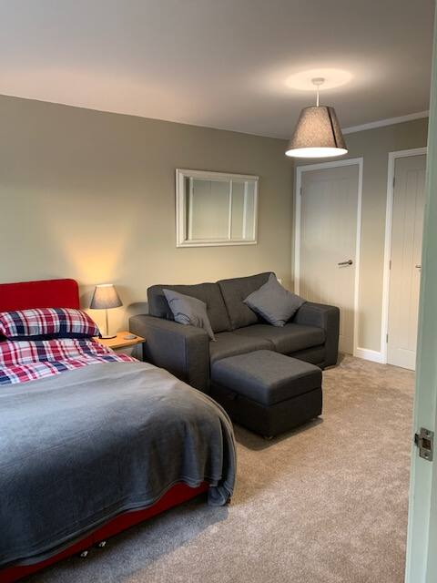

Rotherham Garage Conversion
TypeBuilding
Photos11
AreaBarnsley & South Yorkshire

About the project
An unused Garage space totally transformed into a living area

An unused Garage space totally transformed into a living area